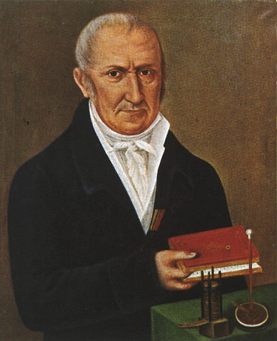

|
Alessandro Volta (1745-1827) è stato un famoso scienziato italiano noto soprattutto per le sue ricerche nel campo dell'elettricità.
Alessandro Volta nacque il 18 febbraio 1745 a Como, in Italia. Studiò fisica e chimica presso l'Università di Pavia e intraprese una brillante carriera accademica.
La sua più grande realizzazione fu l'invenzione della pila voltaica nel 1800, comunemente nota come la "batteria". Questo dispositivo era costituito da dischi di metallo alternati con strati di materiale poroso imbevuto di soluzione salina. La pila voltaica fu il primo dispositivo in grado di generare corrente elettrica in modo continuo e controllabile, aprendo la strada alla produzione di energia elettrica e all'avanzamento della ricerca nell'elettricità.
Fece anche importanti contributi alla comprensione della natura dell'elettricità e dell'elettrochimica. La sua teoria sul contatto e la differenza di potenziale tra i metalli, nota come "teoria della tensione di Volta", fu fondamentale per lo sviluppo dell'elettrochimica moderna.
Grazie ai suoi contributi scientifici, ricevette numerosi riconoscimenti e onori durante la sua vita. Fu nominato conte dall'Imperatore Napoleone Bonaparte nel 1810 e nel 1815 il re Vittorio Emanuele I di Sardegna lo nominò senatore del Regno d'Italia.
Il suo nome è stato immortalato attraverso l'unità di misura della differenza di potenziale elettrico, il "volt", che porta il suo nome. La sua invenzione della pila voltaica ha avuto un impatto duraturo sulla tecnologia e sulla scienza, aprendo la strada alla rivoluzione dell'elettricità che ha trasformato il mondo moderno.

|
|